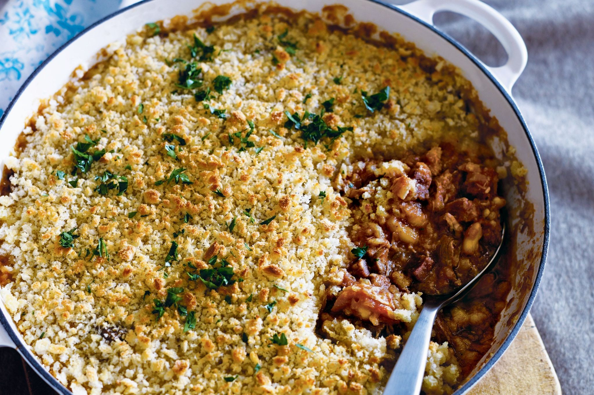
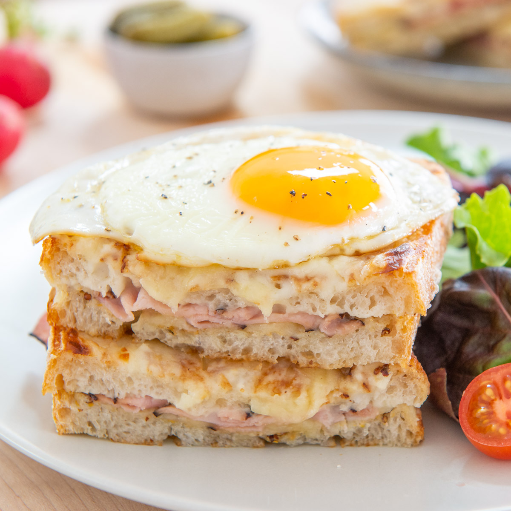

4 ounces thick-cut bacon, cut into 1-inch pieces
4 bone-in, skin-on chicken thighs (about 1 1/2 pounds)
1/2 teaspoon salt
1/4 teaspoon freshly ground black pepper
4 sweet Italian pork sausages (about 12 ounces)
1.Cook the bacon: In a large skillet over medium heat, cook the bacon for 3 to 4 minutes stirring frequently, until it renders much of its fat but is not yet crisp. Transfer the bacon to a large plate.
2.Prep the chicken and sausages: Pat the chicken dry with a paper towel and season both sides with salt and black pepper. Prick each sausage with the tip of a paring knife in a couple of places. This will prevent them from bursting as they cook.
3.Cook the chicken and sausages: In the same skillet used to cook the bacon, add 1 tablespoon olive oil and heat it over medium-high heat. No need to drain out the bacon grease. Add the chicken, skin side-down, and the sausages. You may need to do this in batches if the skillet is not large enough. Cook the meat until golden brown on both sides, 8 to 10 minutes. Transfer them to the plate with the bacon one by one as they look ready.
4.Cook the onions and garlic: Pour off and discard all but a thin layer of fat from the skillet. Return the skillet to the stove over medium heat. Add the onions and garlic and cook for 3 to 4 minutes, until the onions soften.
5.Assemble the cassoulet: Transfer the cooked onions and garlic into a large (at least 4-quart) Dutch oven. Stir in the tomatoes, beans with their liquid, and thyme sprigs. Nestle in the bacon, chicken thighs, and sausages. Bring the cassoulet to a simmer over medium heat. Adjust the heat to a steady simmer and cook, uncovered, for 15 minutes, until the chicken and sausages are cooked through. The chicken should measure 165ºF when an instant read thermometer is inserted into the thickest part of the meat.
6.Turn on the broiler: Set a rack about 8 inches from the broiler element and turn on the broiler.
7.Make the breadcrumbs: In a small bowl, toss the breadcrumbs with the remaining 1 tablespoon olive oil and parsley.
8.Broil the cassoulet: Remove and discard the thyme sprigs from the cassoulet. Evenly sprinkle in the breadcrumbs and place the Dutch oven into the oven to broil for 1 to 2 minutes, until the top browns. Watch it carefully—this only takes a minute or two. Remove the cassoulet from the oven and sprinkle in more parsley, if you’d like.
9.Serve the cassoulet: Ladle some beans into 4 shallow bowls. Top each bowl with a sausage and a chicken thigh. Serve with a baguette on the side and a large spoon to scoop up all the delicious juices.

4 boneless, skinless chicken breasts
salt, to taste
pepper, to taste
1 tablespoon garlic powder
1 tablespoon onion powder
1.Sprinkle the chicken breasts with salt, pepper, garlic powder, and onion powder, tossing to coat evenly.
2.On a cutting board, place a chicken breast between two sheets of plastic wrap and pound until about ½ inch (1 cm) thick with a meat mallet, rolling pin, or heavy pan.
3.Remove the plastic wrap and place 2 slices of Swiss cheese, then 2 slices of ham, then another layer of Swiss cheese, and another layer of ham. Evenly roll the chicken and place onto a new sheet of plastic wrap.
4.Wrap the chicken in the plastic wrap tightly and use the excess plastic on the sides to twist, firming up the roll of chicken cordon bleu as you work. Tie the excess plastic. Repeat with the remaining ingredients, then chill the rolls in the fridge to set for 30 minutes.
5.Meanwhile, preheat a tall-sided pan with 2 inches (5 cm) of oil to 325°F (170°C).
6.After the rolls are set, prepare 2 separate large, wide dishes with the flour, beaten egg, and bread crumbs. Dredge the chicken first in the flour, then the egg, and then bread crumbs.
7.Place the breaded chicken cordon bleu in the oil and cook for about 5 minutes per side, or until the outside is an even golden brown. If a good color is achieved and the chicken’s center is still not 165°F (75°C), place the chicken cordon bleu on a wire rack set over a baking sheet and finish the chicken in the oven at 325°F (170°C) until that temperature is reached.
8.Meanwhile, prepare the sauce. In a 1 ½-quart saucepan over medium heat, melt the butter and cook the garlic until soft. Add the flour and whisk for 1 minute.
9.Add the milk and whisk until fully combined with the roux and no lumps remain. Continue whisking until the mixture comes to a simmer and has thickened.
10.Add the mustard, Parmesan cheese, salt, and pepper and whisk to combine. Remove the pan from the heat
11.Slice the chicken and serve drizzled with Dijon sauce.

2 tbsp butter ((unsalted or salted))
2 tbsp all-purpose flour
1 cup whole milk
2.5 ounces gruyere cheese (shredded (1/2 cup measured))
pinch of nutmeg ((preferably freshly grated))
First Make the Mornay Sauce:
1.Combine butter and flour: To start, melt butter in a skillet or small saucepan over medium heat, then add an equal amount of all-purpose flour.
2.Whisk to combine: Whisk the flour and butter to combine them into a blond paste, then slowly whisk in milk.
3.Heat it up to thicken: Bring the mixture to a boil over medium-high heat, and watch the sauce thicken, just as when you make a béchamel sauce.
4.Turn the heat off, then add the cheese: Turn the heat off, then add shredded gruyere, kosher salt, and a touch of grated nutmeg. Give the white sauce a whisk, until the cheese melts and the sauce has a thick and gooey texture.
How to Assemble The Sandwich:
5.To make the croque madame sandwiches, spread half the bread slices with mustard. Then spread the remaining slices of bread with the Mornay sauce. Then top with shredded gruyere on one side, and deli ham on the other.